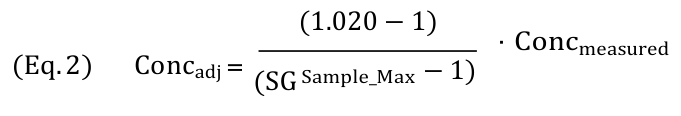

Technical Letters · TL24
Edition v2.0, 2021 (version 2.0) · effective 24 November 2021 · superseded
Retrieved on 25 November 2026 from https://www.wada-ama.org/sites/default/files/2022-01/tl24_diuretics_v2.0.pdf
Editions: v3.0, 2024 (current) · v2.0, 2021 · v1.0, 2021
p. 1
MINIMUM REPORTING LEVEL FOR CERTAIN DIURETICS THAT ARE KNOWN CONTAMINANTS OF PHARMACEUTICAL PRODUCTS
1.0 Introduction
WADA wishes to draw the attention of the Laboratories and Anti-Doping Organizations (ADOs) in charge of Results Management (the Results Management Authority, or RMA) to the following observations and instructions on the reporting of certain diuretics (namely, acetazolamide, bumetanide, furosemide, hydrochlorothiazide, torasemide, and triamterene), which are known to be found as contaminants of some legitimate pharmaceutical products.
Diuretics may be abused to mask the presence in urine of other Prohibited Substances. However, trace quantities of the six (6) diuretics named above have been found as contaminants in oral pharmaceutical products, including both products available by prescription and products available over the counter. While these products are still compliant with purity levels required by good manufacturing practices, the trace quantities of diuretics found in such products are sufficient to cause an Adverse Analytical Finding (AAF).
At estimated urinary concentrations of 20 ng/mL or less, a diuretic would not be effective to mask the presence of any other Prohibited Substances that may be present in the Sample. Therefore, the new Minimum Reporting Level (MRL) for the six (6) diuretics identified above, set at 20 ng/mL, will minimize the risk of sanctioning Athletes who test positive due to the use of contaminated medications, without undermining the fight for clean sport.
2.0 Reporting Requirements
- The presence in urine of one or more of these six (6) diuretics (i.e. parent compound), namely acetazolamide, bumetanide, furosemide, hydrochlorothiazide, torasemide, and triamterene, or, when applicable, any of their Metabolite(s) / degradation product(s) [e.g., chloraminophenamide (ACB), which is a degradation product of hydrochlorothiazide], in each case at an estimated concentration greater than (>) 20 ng/mL, shall be reported as an AAF;
[Comment: For example, a finding where either hydrochlorothiazide or ACB is present at an estimated concentration above (>) 20 ng/mL shall be reported as an AAF.]
- The presence in urine of one or more of these six (6) diuretics (i.e., parent compound), namely acetazolamide, bumetanide, furosemide, hydrochlorothiazide, torasemide and triamterene, and, when applicable, any detected Metabolite / degradation product, in each case at an estimated concentration at or below (≤) 20 ng/mL, shall be reported as a Negative Finding;
[Comment: For example, a finding where both hydrochlorothiazide and ACB are present at an estimated concentration less than or equal to (≤) 20 ng/mL shall be reported as a Negative Finding, except for weight-category sports (see Annex 1), in which case the finding shall be reported as an Atypical Finding (ATF).
p. 2
- As the sole exception to this new MRL for acetazolamide, bumetanide, furosemide, hydrochlorothiazide, torasemide, and triamterene, where a Sample is collected from an Athlete participating in a sport or discipline that uses weight classes (see Annex 1), Laboratories shall report the presence of one or more of these six (6) diuretics (or their Metabolite(s)/degradation products) at an estimated concentration equal to or below (≤) the MRL of 20 ng/mL as an ATF, triggering a mandatory investigation by the RMA to determine whether an anti-doping rule violation (ADRV) should be asserted.¹
[Comment: The rationale for this exception is that diuretics may be abused to induce weight loss in sports/disciplines where Athletes need to meet weight criteria. This risk exists both In-Competition and Out-Of-Competition. Therefore, when a Laboratory reports the presence of one or more of the six (6) diuretics identified above (or their Metabolites or degradation products) at an estimated concentration of 20 ng/mL or less in the Sample of an Athlete competing in such a sport or discipline, the RMA shall conduct an investigation to determine whether it is appropriate in all the circumstances to bring proceedings asserting commission of an ADRV.]
[Comment: As a consequence of this new MRL for these six (6) diuretics, footnotes (e) and (g) of TD2019MRPL, relating to the detection of Threshold Substances (salbutamol, formoterol, cathine, ephedrine, methylephedrine and pseudoephedrine) shall be amended as:
e. Salbutamol and formoterol are considered Threshold Substances; therefore, their determination and reporting are covered in the TD DL. When detected in conjunction with a diuretic subject to an MRL (at levels higher than (>) the corresponding MRL of 20 ng/mL), or in the presence of any other diuretic or a masking agent (at any concentration), salbutamol and formoterol shall be reported as an AAF at any concentration.
g. Cathine, ephedrine, methylephedrine and pseudoephedrine are considered Threshold Substances; therefore, their determination and reporting are covered in the TD DL. When detected in conjunction with a diuretic subject to an MRL (at levels higher than (>) the corresponding MRL of 20 ng/mL), or in the presence of any other diuretic or a masking agent (at any concentration), these stimulants shall be reported as an AAF only if present above the MRL established for stimulants (i.e., 50 ng/mL).
In addition, Articles 2.1 and 2.2 of TD2021DL shall be amended as follows:
2.1 Beta-2 Agonists - Formoterol and Salbutamol
The confirmation of salbutamol and formoterol requires only the identification of the compound, and not its quantification, if any of these two exogenous Threshold Substances is detected in a Sample in conjunction with either:
- a prohibited diuretic, which is subject to a Minimum Reporting Level (MRL) and is present in the Sample at levels higher than (>) the MRL, or
- any other diuretic (not subject to an MRL) or a masking agent, which is present in the Sample at any level.
In such cases, the Laboratory shall:
- Perform the Confirmation Procedure (CP) for the diuretic/masking agent and report the results as an AAF;
- Perform the (qualitative) CP for the beta-2 agonist and report the results as an AAF if identified at any concentration level in compliance with the TD IDCR, unless there is an approved TUE for the beta-2 agonist (see ISL 2021, Article 5.3.6.2.2).
1
A Stakeholder Notice will be published, detailing the mandatory investigative process.
p. 3
2.2 Stimulants - Cathine, Ephedrine, Methylephedrine and Pseudoephedrine
The confirmation of these exogenous Threshold Substances requires only the identification of the compound, and not its quantification, if any of these exogenous Threshold Substances is detected in a Sample in conjunction with either:
- a prohibited diuretic, which is subject to an MRL and is present in the Sample at levels higher than (>) the MRL, or
- any other diuretic (not subject to an MRL) or a masking agent, which is present in the Sample at any level.
In such cases, the Laboratory shall:
- Perform the CP for the diuretic/masking agent and report the results as an AAF;
- Perform the (qualitative) CP for the stimulant and report the results as an AAF if identified, in compliance with the TD IDCR, at an estimated concentration level greater than (>) the applicable MRL for stimulants (as defined in the TD MRPL), unless there is an approved TUE for the stimulant (see ISL 2021, Article 5.3.6.2.2).]
- In each case, when the specific gravity (SG) of the urine Sample in question (as measured in the Laboratory) is greater than (>) 1.018, the concentration of the substance estimated in the Sample shall be adjusted prior to reporting according to the following equation:

Refer to the effective TD DL for instructions on calculating SGSample_Max].
p. 4
ANNEX 1 Sport/Disciplines with Relevant Weight Classes
- Sports and Disciplines of Olympic and IOC Recognized International Federations, and members of the Alliance of Independent Recognized Members of Sport
- Sports and Disciplines of Athletes with an Impairment IPC Sports
| SPORT | DISCIPLINE |
|---|---|
| Arm Wrestling | Arm Wrestling |
| Bodybuilding | Bodybuilding |
| Boxing | Boxing |
| Ju-Jitsu | All |
| Judo | Judo |
| Karate | Karate |
| Kickboxing | All |
| Muaythai | Muaythai |
| Powerlifting | All |
| Sambo | Sambo |
| Savate | All |
| Sumo | Sumo |
| Taekwondo | Sparring |
| Tug of War | Tug of War |
| Weightlifting | Weightlifting |
| Wrestling | All |
| Wushu | Sanda |
| SPORT | DISCIPLINE |
|---|---|
| Para-Powerlifting | Para-Powerlifting |
Non-IPC Sports
| SPORT | DISCIPLINE |
|---|---|
| Arm Wrestling | Para-Arm Wrestling |
| Judo | Para-Judo |
| Taekwondo |
Para-Taekwondo-Kyorugi
Retrieved on 25 November 2026 from https://www.wada-ama.org/sites/default/files/2022-01/tl24_diuretics_v2.0.pdf